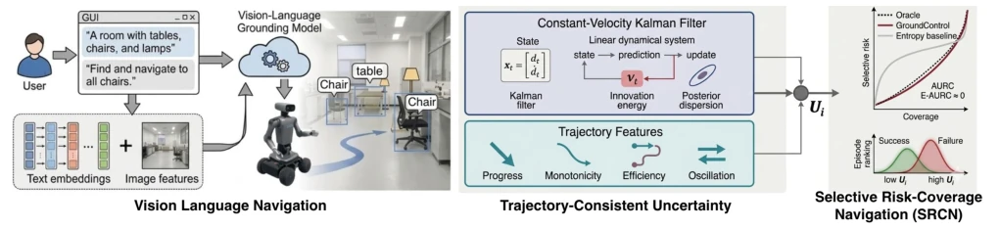
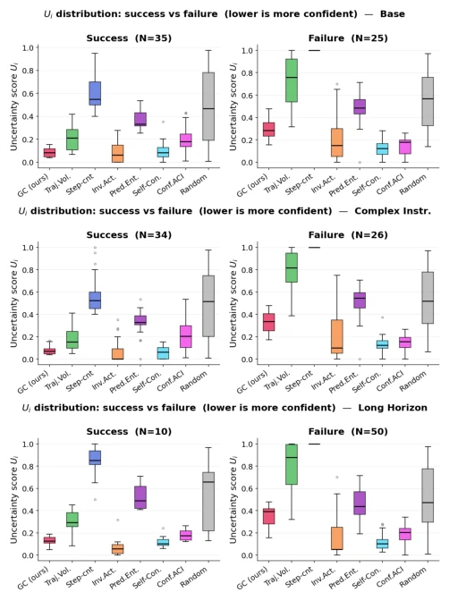
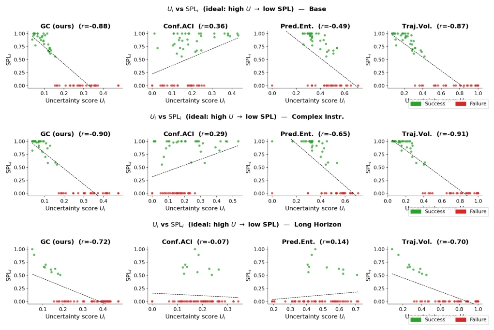

This paper attempts to address the persistent challenge of "confidently lost" in VLN agents. The authors keenly observe that traditional action entropy fails to capture trajectory-level oscillations or stagnation, thereby proposing GroundControl. The core idea involves using Kalman filtering to monitor the dynamic changes of "distance to goal", followed by fusing trajectory features. This approach is indeed superior to simply examining token confidence; while robots do not deceive, a path deviation remains a path deviation. However, this method has a critical limitation: it heavily relies on the true signal of distance to the goal and may be constrained in scenarios lacking precise positional information. Additionally, although the evaluation protocol SRCN is novel, it is essentially post-hoc analysis and does not truly resolve the online intervention problem. Overall, it is a useful diagnostic tool, but still one step away from being a "lifeline".
Embodied navigation agents perform well on benchmarks but tend to collapse during long-horizon tasks in actual deployment. Existing uncertainty estimations mostly rely on the entropy of instantaneous action distributions or token confidence [15], [17], which can only reflect the ambiguity of single-step decisions and cannot capture trajectory-level failure modes such as "spinning in place" or "taking detours". For instance, an agent may confidently select actions at each step, yet cumulatively deviate from the goal. Literature [4] also notes that relying solely on final success rate cannot assess risks during execution. Therefore, a signal capable of perceiving geometric and temporal inconsistencies is required to provide warnings before task completion. This paper aims to fill this gap by modeling the dynamic evolution of distance to the goal to quantify uncertainty.
The GroundControl framework is divided into two parts: signal modeling and evaluation protocol. First, Constant-Velocity Kalman Filtering (Constant-Velocity KF) is utilized to model the distance-to-goal signal $d_t$, predicting nominal goal-oriented progress. By calculating normalized innovation statistics and posterior covariance growth, the statistical deviation between observations and predictions is captured. Second, four trajectory features are fused: normalized progress, distance monotonicity, path efficiency, and action reversal frequency, corresponding to stalling, non-monotonic approach, detouring, and oscillating behaviors respectively. Finally, the filter signal and features are linearly weighted to obtain the episode-level uncertainty score $U_i$. Additionally, the authors propose the SRCN protocol, which evaluates the ranking quality of uncertainty scores independently of task success rate through Risk-Coverage curves and AURC metrics, ensuring the ability to distinguish between failed and inefficient trajectories.

Fig. 1: Overview of the GroundControl framework for trajectory-consistent uncertainty estimation in vision-language navigation. A VLM-based navigation agent produces a trajectory with distance-to-goal signal {dt} while executing actions conditioned on observations and language instructions. GroundCo
Experiments are conducted on five subsets of the EB-Navigation benchmark, totaling 300 episodes, testing three VLM models including GPT-4o. Comparison baselines include Conformal reasoning, action entropy, self-consistency, etc. Evaluation metrics adopt the newly proposed SRCN protocol, focusing on AURC and E-AURC. Results show that GroundControl achieves the lowest E-AURC under both success rate and SPL losses (weighted average 0.0024), approaching ideal ranking. Especially in long-horizon tasks (long horizon), traditional entropy methods fail, while GroundControl can still accurately identify inefficient trajectories. Ablation analysis indicates that the combination of trajectory features and filter signals significantly improves discrimination, proving that geometric consistency reflects navigation quality better than instantaneous action dispersion.

Fig. 2: Distribution of episode-level uncertainty Ui con- ditioned on outcome (left: successes; right: failures) for representative splits (base, complex instruction, and long horizon). A well-ranked estimator shifts failure episodes toward higher Ui with limited overlap. GroundControl con- sistentl

Fig. 5: Per-episode uncertainty score Ui versus SPLi for each method. Points are coloured green (success) and red (failure). A well-calibrated estimator produces a negative correlation, high Ui for failed/inefficient episodes and low Ui for successful ones shown by the dashed linear trend. The Pears